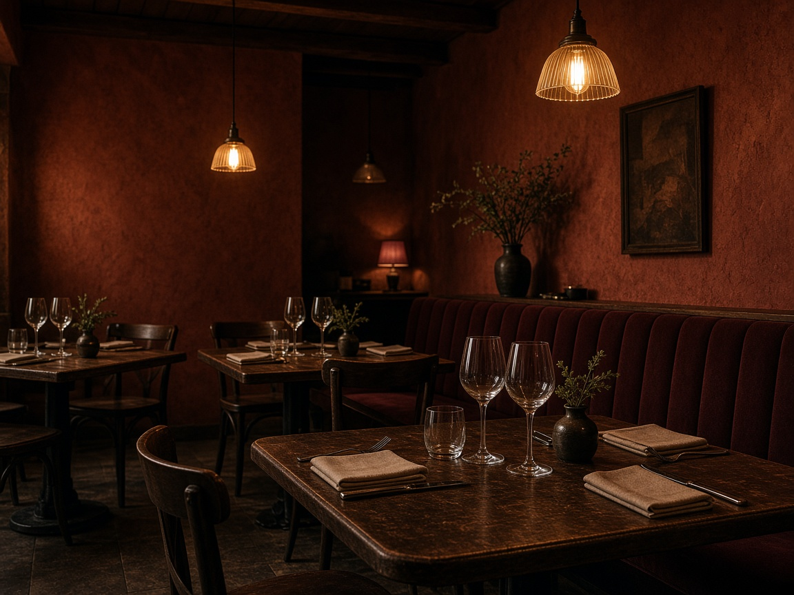
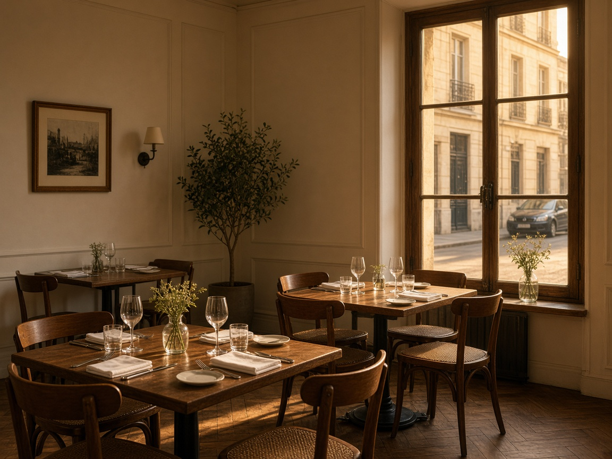
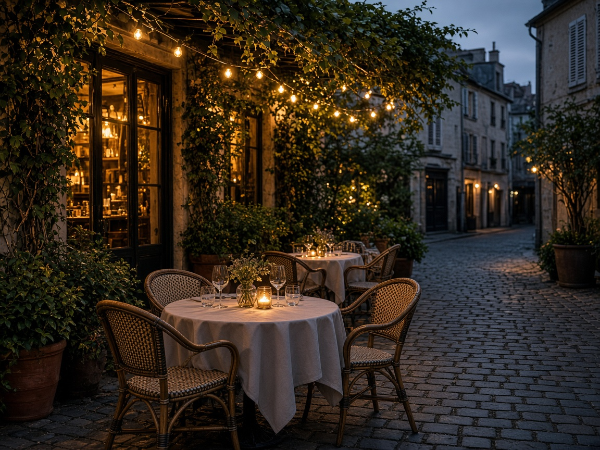
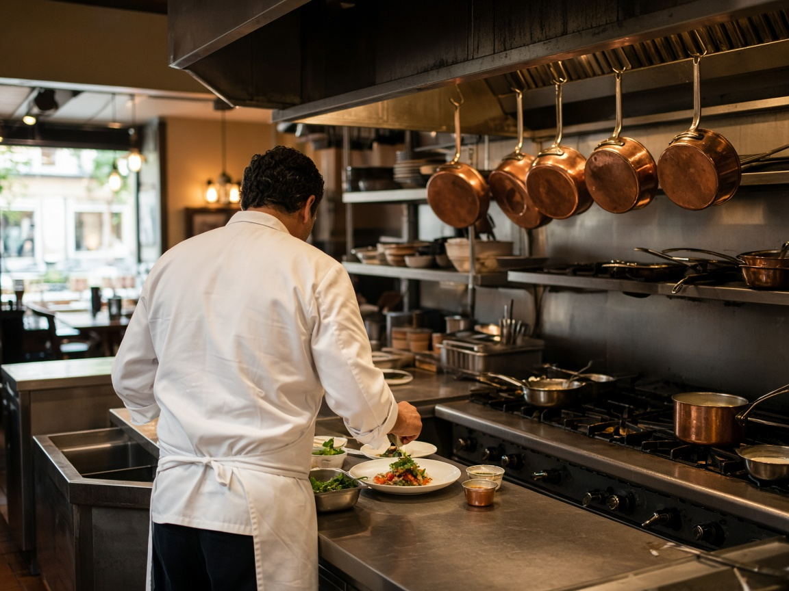

Horaires
- Mardi — Samedi12h – 14h · 19h – 22h
- Dimanche12h – 14h30
- Lundifermé
Restaurant bistronomique
Le soir, la salle s’allume doucement. On sert une carte courte, qui change avec le marché. Réservation recommandée, surtout le week-end.

Courte, lisible sur téléphone. Pas de PDF à pincer. Les plats et les prix sont des exemples.



Sur un vrai site, la réservation part en cuisine. Ici, c’est un exemple Webly.
Créer un site comme celui-ci →